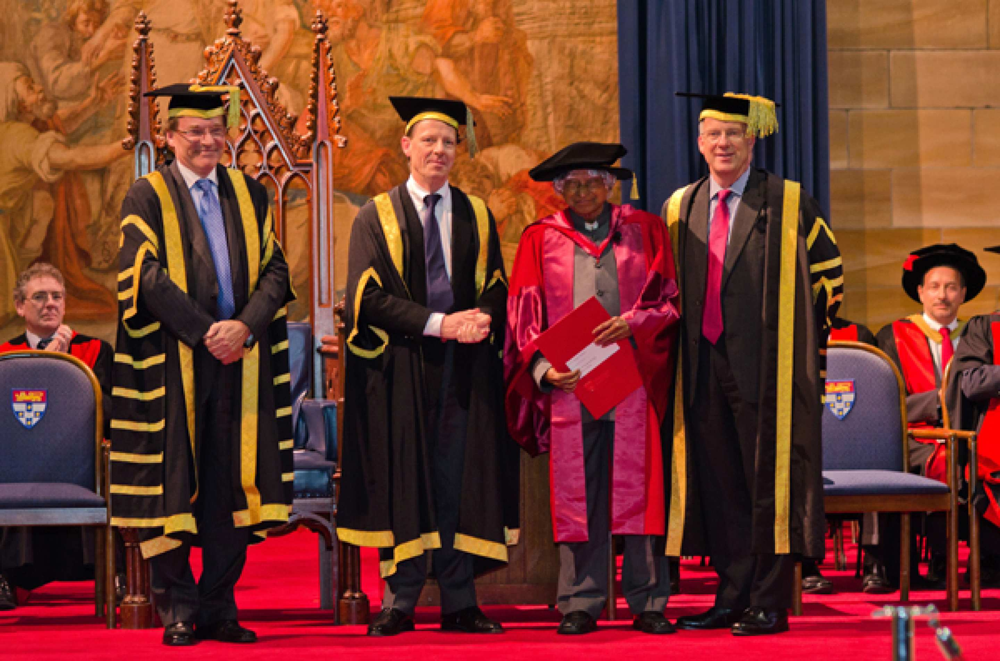

Dr Abdul Kalam receiving his honorary degree at the University of Sydney in 2011.

Dr Abdul Kalam was awarded an honorary degree from the University of Sydney for his contribution to society during his time as President of India from 2002 to 2007 and as one of India’s most eminent scientists.Dr Kalam established the Dr Abdul Kalam International Scholarships, merit-based scholarships for international students commencing a degree at the University of Sydney's Faculty of Engineering and Information Technologies.